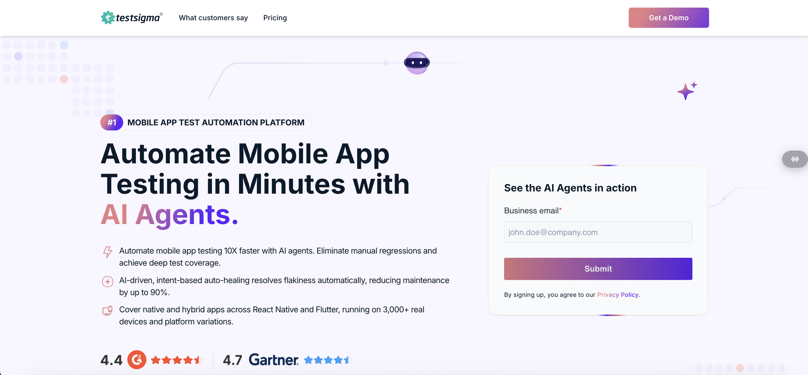

The page today — the hero section that came out of this fix.
Early in an experimentation cycle, we rolled out an AI-assisted redesign of the hero section on our core product testing pages — new copy, new layout, generated and refined quickly using AI tooling. It felt like a clear improvement on paper.
It wasn't. Conversion rate dropped after the change went live. Not a rounding error — a real, visible dip on pages that mattered.
The easy response would have been to guess at a second redesign, or just revert and call it a wash. Neither felt right. A worse hero section usually means a specific mismatch between what the page says and what the visitor actually needs to hear — not a generically "bad" page.
Instead of guessing, I used Attive to analyze call recordings from customers who'd actually closed — mining the transcripts for the recurring, product-specific pain points they described in their own words before they bought. That's a different exercise than asking "what do we think matters to buyers" — it's asking "what did buyers who actually converted say mattered to them."
Doing this manually — listening back through a month of closed-won calls, tagging themes, finding the patterns — would have taken hours. The AI-assisted pass took minutes, which meant the fix shipped fast enough to matter.
I rewrote the hero copy to speak directly to the pain points the call data surfaced — replacing generic value language with the actual words and priorities real buyers had used when explaining why they bought.
Conversion didn't just recover. It landed meaningfully above where it had been before the AI redesign that caused the dip in the first place — more than a 2x lift in MQL conversion on the pages involved.
This wasn't a one-off — it's representative of how I run growth work generally: treat every result as a hypothesis to test, not a decision to defend.